来源：https://z2yk8obpmh.feishu.cn/docx/ZKv2dLkN9oo5nQxdt8ecjE2rnHc
hello，大家好，我是SCAI实验室的张耐心。在SCAI实验室办公的过程中，发现海外很多人都在用discord进行社区运营和赚钱，但是因为官方的一些限制，很多商业化功能，并没有对中国身份开放，于是想到了可以利用第三方支付平台+discord机器人的方式，间接实现收款，并搭建了一个可以收款的discord聊天机器人。考虑到目前生财上关于discord的内容和帖子还不是很多，希望这篇科普贴，能够对大家有所帮助和启发。
我的AI二次元男友体验链接(需要魔法上网在手机端中打开)：https://discord.gg/4vyNJJgcrs
discord原来是一个游戏社交软件，适合边玩游戏边进行语音聊天
月活2.2亿，大量的游戏、二次元、ai兴趣人群在上面
非常适合做海外社群运营，承接公域流量到私域。
discord= 聊天+语音+机器人
简化版：海外加强版微信
1、开发一些ai机器人/工具到discord上去卖
2、网站/社媒搞流量，利用discord进行海外社群自动化运营，承接海外流量。
例如：
1) 利用discord机器人，自动翻译不同国家的语言，消除语言门槛和障碍。
2）针对用户高频会提到的问题，用机器人进行自动解答，省去人工回复的时间和成本。
3) 活动运营，搭建海外生财-web航海服务器，重要功能按照频道进行分类
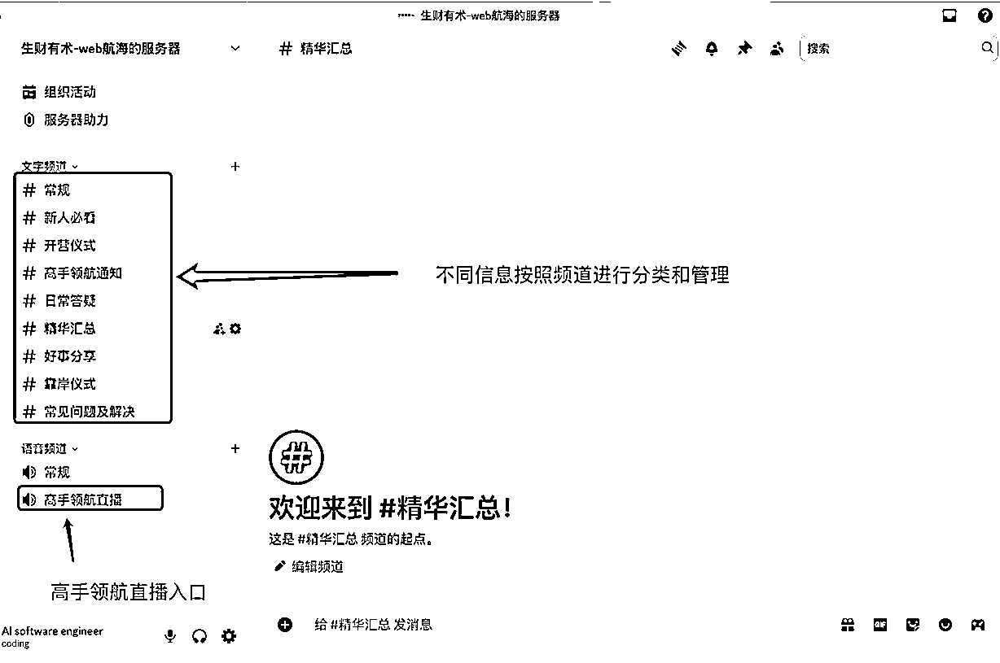
诞生背景
discord最早于2015 年上线，最初定位为“为玩家而生的免费语音/文字聊天室”。2022 年 Midjourney把AI 绘图首发在Discord，让大量AI爱好者涌入；此后Web3、二次元、开发者、教育等用户也开始入驻其中。
discord最出色的体验就是在服务器中，可以创建多个频道，每个频道都有单独的功能和特点，从而方便用户在不同的频道中讨论不同的主题和内容，对内容进行更好的分类。一群二次元爱好者，可以在火影忍者的频道中讨论火影，也可以在海贼王频道中讨论海贼。
国内的qq频道功能，就是参考和借鉴了discord的产品特性。
最新规模
月活跃用户（MAU）≈ 2 亿
活跃服务器：每周 > 2100 万个；
discord给我最大的感觉就是灵活高效，你能想到的很多功能，它都帮你做好了，例如：
| 特色 | 价值 | 对比国内工具 |
|---|---|---|
| 分区服务器 + 频道设计 | 可为不同话题、权限、语言开独立频道；频道内支持置顶等功能 | 比QQ/微信群分组更细、更易沉淀知识 |
| 实时语音 视频 | 延迟低、可嵌入屏幕共享、音乐、协同白板 | 类似飞书会议，但无需退出聊天窗口 |
| Bot应用生态 | 涵盖上万款第三方机器人，能实现自动翻译、表情包、AI 聊天、上链验证、自动角色分配等功能 | 微信/QQ 机器人功能受限且需付费 |
| 跨端一致 | 手机、电脑端体验几乎一致 | 国内很多软件，桌面版和移动端功能不一致 |
| 可嵌入App直接使用 | 2024年推出Embedded App SDK，允许在频道里直接跑小游戏、白板、AI Demo | 类似小程序，生态开放 ，分润按照90/10 分成（创作者90%） |
小结：discord集成了实时语音/视频+机器人自动回复+小程序+群聊分组功能，还能免费使用。
流量承接
discord可以从TikTok、Twitter(X)、web网站、youtube等平台进行导流，沉淀到Discord私域，可以提高用户粘性，增加复购，提高反馈效率。
竞品 & 用户洞察
直接潜伏在同行服务器里观察 FAQ、用户吐槽，甚至可以直接捞人，获取目标用户，比去论坛更加高效。
全球性社群运营
官方提供 29 种 UI 语言，Bot 可实时翻译；一个服务器即可覆盖多语地区。
品牌资产沉淀
频道长期可检索、可链接，FAQ/资源库天然 SEO；还可嵌入自家网页 iframe。
服务器：类似于学校中的一个社团
频道：类似于社团下不同的子部门。可以设置不同频道的功能、用户权限，进行更加灵活的管理。比如一般会有服务器公约频道、欢迎频道、闲聊频道、活动频道等。
管理员有很大的权限，可以设置频道中谁禁言、把谁踢出去。
discord有网页端、手机端和电脑端。
电脑端主要分为四个部分：
最左侧的服务器栏，显示你加入了哪些服务器
中间的频道栏，显示你加入的服务器有哪些频道
最右侧的内容栏，显示当前频道下的聊天内容/公告等
最下方的个人信息栏，显示你的个人信息，并支持个人信息修改
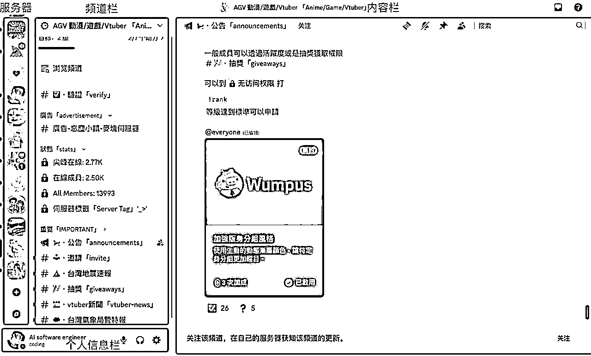
我把目前discord上常见的变现方式搜集出来了，整理总结如下
| 机会 | 变现方式 | 适合人群 | 其他说明 | 限制 |
|---|---|---|---|---|
| Server Subscriptions（服务器订阅/知识付费社群） | 价格自定 $2.99–199.99/月；Discord抽10%，创作者保留 90% | KOL、教育培训、SaaS 社区 | 社群可以提供专属频道/角色/知识/资源包等有价值内容。例如，教老外如何赚钱、如何使用工作流等。 | 中国身份，暂时无法直接开通Server Subscriptions，需要海外实体 |
| Bot SaaS（开发机器人及插件） | 向服务器主收订阅费 $5–25/月/服；支持一次性 | 案例：市面上 Statbot、MEE6 等皆年收百万美元 | 目前 仅支持美国/英国/欧洲开发者使用Stripe 结算。 | |
| 内嵌 App开发 | 官方SDK 已开放，可基于官方SDK进行二次应用开发；首 $1 M 销售平台费仅 15% | 游戏 & 工具开发者 | 成功案例： | 目前仅美国/英国/欧洲 可提现，新人上手难度比Bot SaaS更高 |
| 游戏/数字商品销售 | 开发者/创作者通过discord官方渠道上架数字商品（即自己的服务器通过官方认证）后，可以售卖数字商品，销售额 90% 归开发者/创作者 | 独立游戏、资产包作者、国内游戏主播出海 | 成功案例： | 中国身份，暂时无法开通discord官方对接的stripe收款渠道和官方商城，暂时只能通过第三方支付机器人完成收款和发货通知 |
| 海外社区运营服务 | 打包“搭建+管理+Bot 配置”，收顾问费 | 海外运营人员 | 可以使用一些现成的机器人进行打包卖给别人，并收取顾问费。 | 可直接落地，收费走 Payoneer、Wise、Stripe HK/SG等渠道,但是需要有海外社群运营经验 |
| 赞助/营销/广告 | 卖广告位、营销合作 | 直播主/服务器运营主 | 案例：大型服务器（10万+）发布一次广告的价格通常在几十到一百多美元区间，可以通过批量销售和网络规模提高广告收入。 | 最友好，变现渠道与海外其它社媒同理 |
因为很多现在discord官方的一些商业模式并不对中国身份开放，需要一些其他的方案，例如开美国主体公司，或者开发一个接入支付的机器人，这样就可以通过机器人间接实现变现。下面我会展示一下我开发的机器人的过程，给大家一个参考
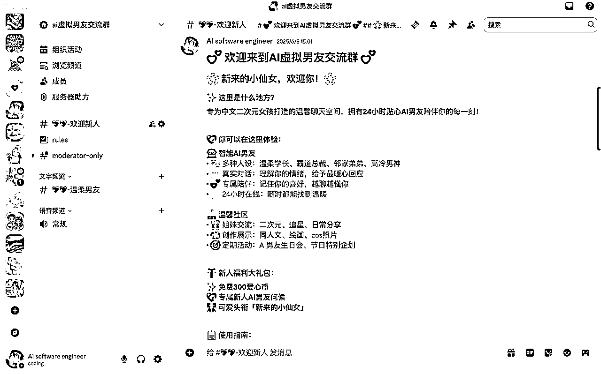
1、跟他进行聊天互动，根据聊天内容的深度，提高对应数值的亲密度，解锁亲昵称呼。
2、引入dol虚拟货币，用户每次聊天都需要消耗dol货币数值
3、支付功能接入，用户可以购买花钱购买dol虚拟货币增加聊天次数
4、不定时主动发送私信
5、功能快捷键
6、简单ai记忆功能
前端：discord app
后端：discord官方api
ai功能：openrouter api（gpt4o）
支付：creem
数据库：supabase
部署：railway
注册discord账号，可以用邮箱进行注册。网站：https://discord.com/
https://discord.com/developers/applications
打开上述链接，点击右上角的“new application”
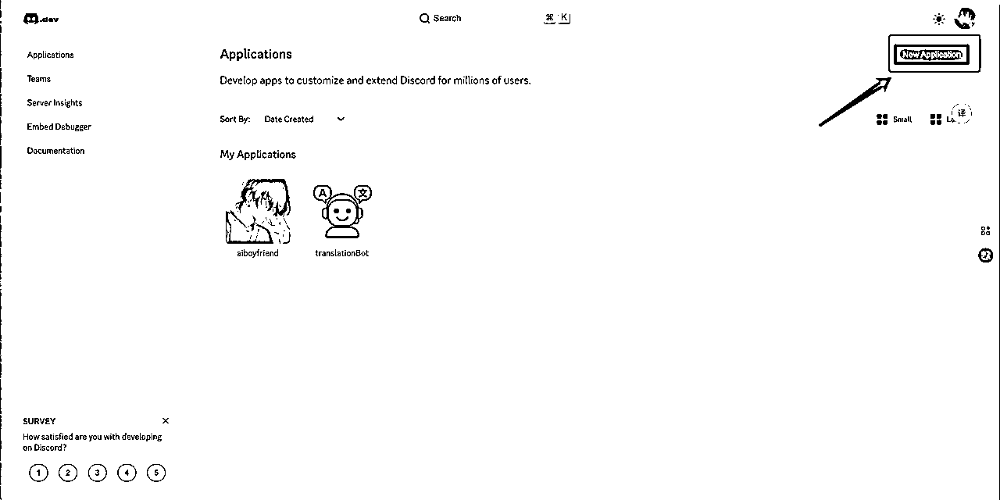
新建以后，会有一个提示框，输入你的机器人名称即可。
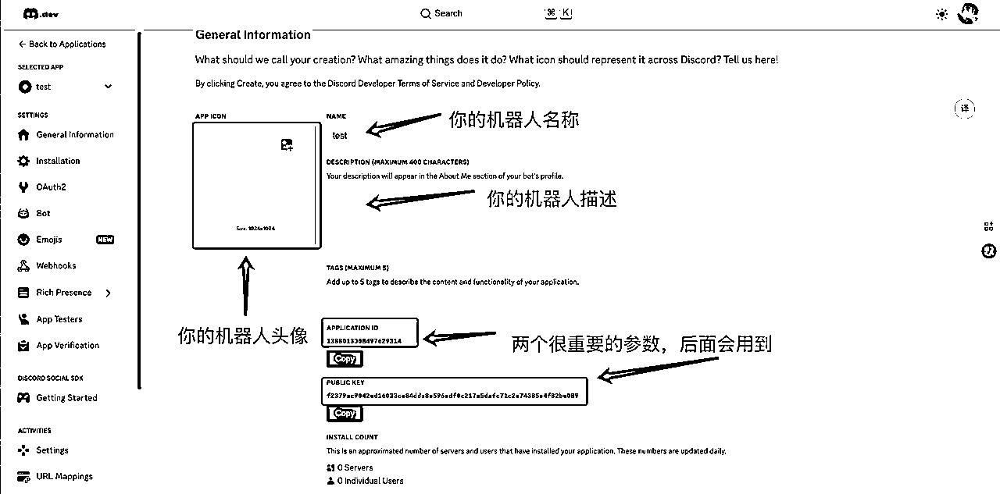
在OAuth2中的bot permissions中，勾选send message、read message history、use slash commands权限。
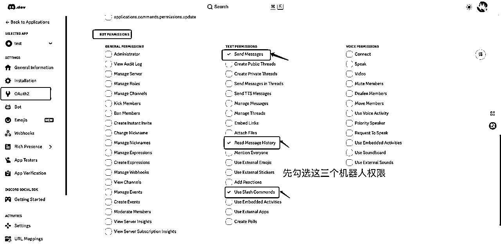
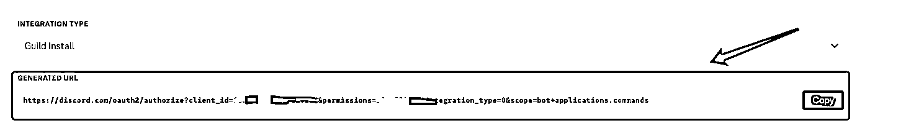
在上方勾选完以后，会生成一个链接，点击复制后，可以邀请机器人进入服务器。
在bot中的bot permissions中，勾选send message、read message history、use slash commands权限。
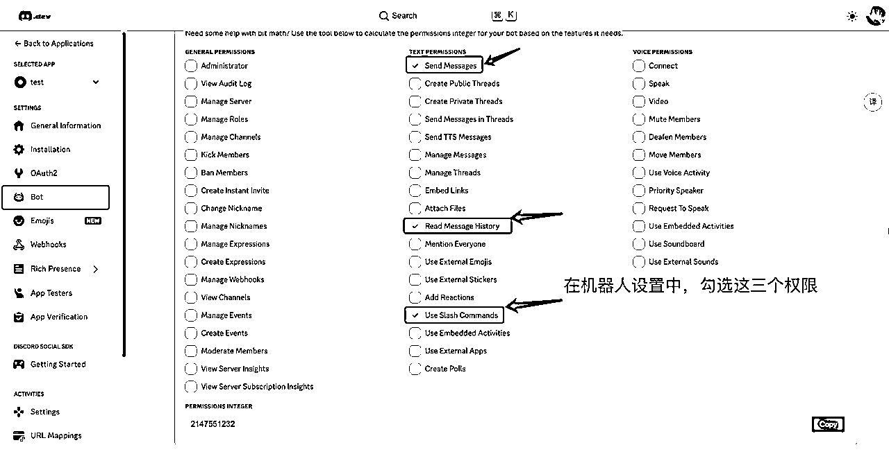
OAuth2和Bot的区别
OAuth2：主要是设置授权相关的参数，明确谁可以用、怎么邀请、是否需要用户授权登录
Bot：主要是设置机器人相关的参数，明确机器人能够拿到哪些事件、具备哪些功能
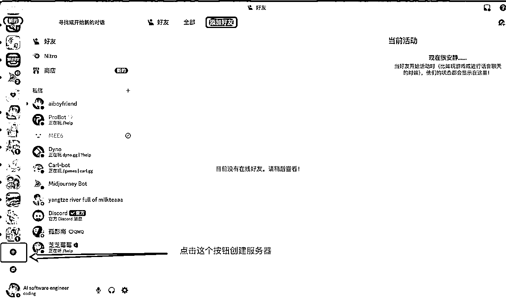
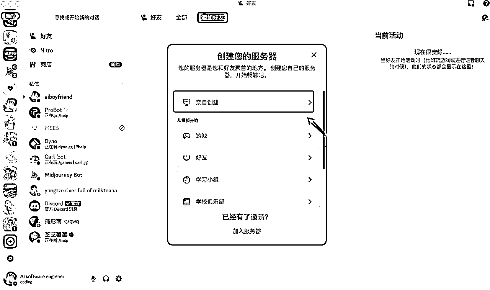
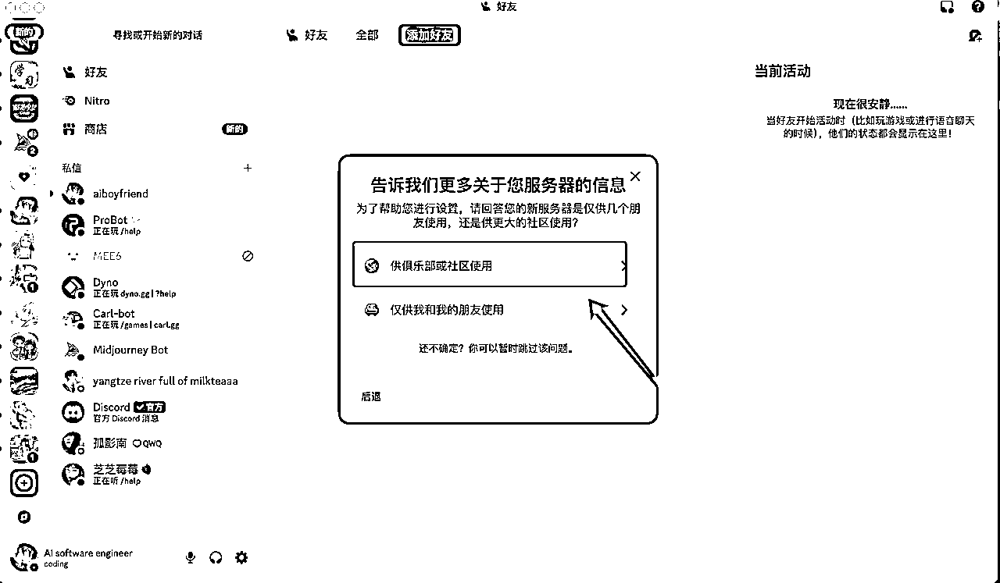
通过2）中创建好的url链接，把机器人拉到自己的服务器或者别人的服务器中。
打开cursor，在cursor中，主要让机器人完成下列核心功能
配置文件中，主要需要设置BOT_TOKEN、CLIENT_ID参数。如果忘记了BOT_TOKEN,可以在bot->reset token中进行重置。
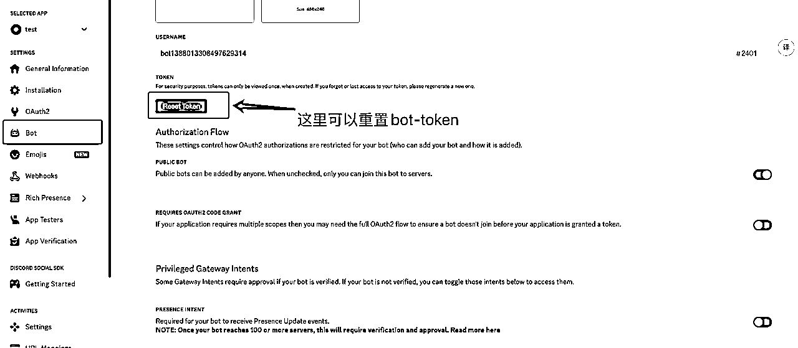
对新人来说，支付接入这部分，涉及到的专业术语较多，且不太好理解，我争取用通俗的语言解释清楚；站在用户的角度，支付主要的流程如下：
1、下单：用户点击“购买”按钮，系统立刻生成一个订单号（比如 T20250716‑001）。
2、付款：用户跳转到收银台页面——支付宝、Creem、Stripe等支付平台都类似。
3、Webhook：用户完成付款后，支付平台发送（post）一条消息到我们的后端地址，例如：
订单 T20250716‑001已付款，签名见消息的header部分。
4、后台确认：我们用支付平台给的“签名”确认消息没被篡改 → 把订单状态改成“已付” → 给用户发货/充余额/开权限。如果我们计算得到的签名和支付平台返回的签名不一致，支付就会失败。
5、通知用户：签名验证没问题，用户支付成功后，网页或Discord Bot给用户发送提示：
你已经成功完成支付，对应套餐已开通，感谢支持！”
creem支付实现的流程图（以我的discord机器人为例）：
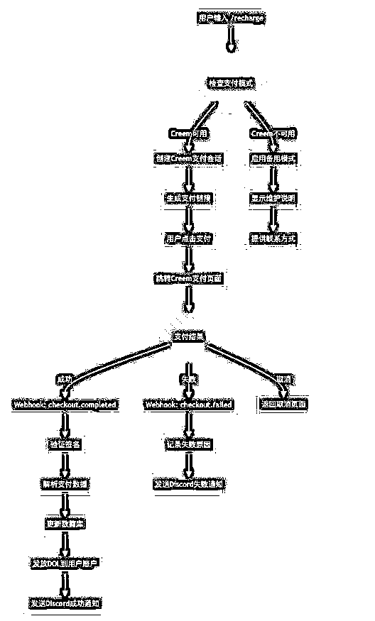
支付部分，我会分为四个阶段进行讲解，最后一个环节是部署，可以结合第七步一起看。
第一阶段：账户和产品准备
步骤1：注册Creem账户
步骤2：创建产品套餐
在Creem后台依次创建4个数字产品（下面以我的虚拟数字商品为例）：
| 套餐名称 | 价格 | 说明 | 用途 |
|---|---|---|---|
| 新手包 | $4.50 | 450 DOL | 初次体验 |
| 基础包 | $9.90 | 1000 DOL | 日常充值 |
| 标准包 | $19.90 | 2200 DOL | 高性价比 |
| 至尊包 | $49.90 | 6000 DOL | 大额充值 |
重要：dol是虚拟货币，类似于token，创建后记录每个产品的ID（格式：prod_xxxxx）
步骤3：获取API凭证
第二阶段：技术环境搭建
步骤4：数据库准备
使用Supabase（推荐）创建数据表：
步骤5：环境变量配置
在本地的开发环境中，创建.env文件，配置以下关键变量：
Discord配置：
Creem配置：
应用配置：
数据库配置：
第三阶段：核心功能实现
步骤6：支付服务具体实现
这部分代码，主要是完成用户从下单到支付的核心功能（不涉及到webhook通知），需要完成的核心功能：
步骤7：Webhook服务器通知实现
这部分代码，主要是在用户支付完成后，支付平台进行webhook通知，我们的后端需要进行后续业务处理，完成整体的支付->到账功能。
我们的后端接受到webhook请求后，需要完成下列核心功能：
步骤6和步骤7合起来后，跟ai交互的参考提示词：
帮我完成discord机器人的支付功能，实现用户输入/recharge指令后，可以选择对应的充值套餐，在支付界面支付相应金额后，dol虚拟货币到账，具体实现可以参考creem的官方文档：https://docs.creem.io/introduction
我的业务逻辑是：用户点击购买按钮，生成订单号，并跳转到支付界面（支付金额根据用户选择的套餐金额来确定），在支付界面，用户可以输入信用卡等信息，点击“支付”后，对用户的支付信息进行校验。【这部分对应于步骤6】
同时webhook通知的地址为:XXXX（填你的webhook通知地址），discord机器人收到通知后，进行签名校验。如果校验成功，根据用户购买的套餐，把相关的数据进行落库，并给用户的dol余额进行对应增加，并在前端提示用户支付成功。如果支付失败或者校验失败，在前端提示用户失败原因。【这部分对应于步骤7】
第四阶段：本地开发测试
步骤8：本地环境配置
这一步主要是进行环节变量配置，防止后面因为环境变量配置出错而导致问题
备注：webhook的通知地址必须是公网地址，本地地址无法通知，所以需要ngrok把本地地址暴露到公网上进行webhook测试。
步骤9：功能测试
这一步主要是测试支付全链路是否能够成功完成，可以让ai帮你写一些中间过程的输出语句，检验每一个环节是否成功工作。如果失败的话，可以通过日志输出，帮助定位哪个环节出问题了。
针对我的案例，我的测试清单为：
参考上述流程，再结合自己的业务逻辑，进行一步一步测试，每一步都测试成功的话，最后就可以跑通支付环节。
第五阶段：discord机器人生产环境部署及售后
这一步主要是为了让本地能够运行的discord机器人，让其能够线上运行，所以我们需要选择一个部署平台把我们的机器人部署上去。
步骤10：选择部署平台
推荐平台：
步骤11：部署配置
在进行部署的时候，也需要进行环节变量配置，需要把本地.env（或者是.env.local）文件中的参数，在部署平台中进行设置，而且每次更新环境变量后，需要进行重新部署，不然就可能读不到最新的环境变量数值（在Railway上部署的时候，修改变量或者设置新变量，相关变量会改变颜色，你以为程序自动读取了，实际上并没有，需要重新部署后才能读取）
在creem中，将webhook地址改为生产环境的域名
creem中webhook配置页面如下：
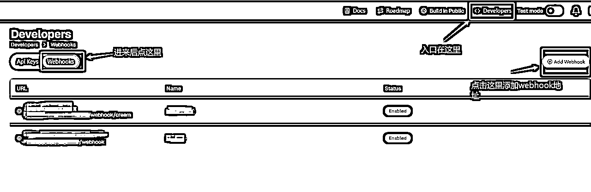
步骤12：用户支持/售后
这一步主要是万一用户进行了双次支付、想要退款等操作时，需要提供好对应的支持，防止用户想要退款找不到人，然后举报你的机器人。一般在支付界面中提供你的联系方式（邮箱）就好。
常见问题处理：
一般用户需要退款的话，帮他处理即可，安全、不被举报最重要。
测试过程的一些技巧：
1、creem支持在测试环境中进行测试，把支付的流程测试成功后，只需要修改配置参数即可。我用过测试环境进行测试，但是失败了，所以就没用这种方式
2、设置产品定价以后，可以在discout中设置优惠券，按照百分比设置优惠券，例如100%，在支付测试的时候，输入折扣码。就可以实现0损耗测试支付过程。不然真的扣款的话，提现会被平台扣除手续费，会有大概5%左右的损耗，如果多次测试的话，会很不划算（我主要采用了这种方式进行测试）
第一步：在充值之前，输入/stats指令，查看当前的dol余额为5180dol
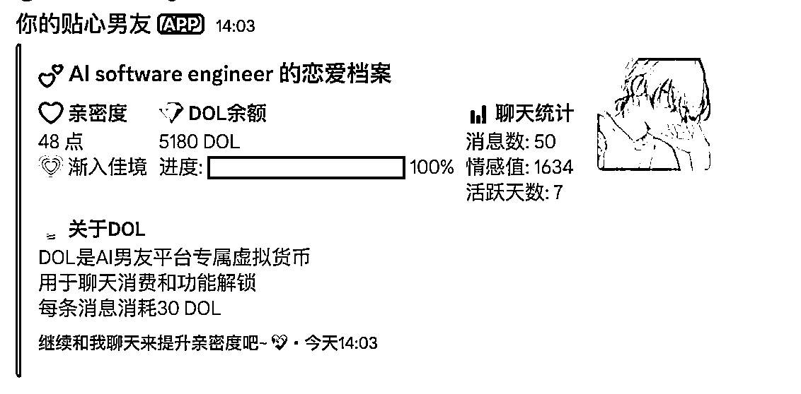
第二步：输入/recharge指令，点击package，选择450dol的新手充值包
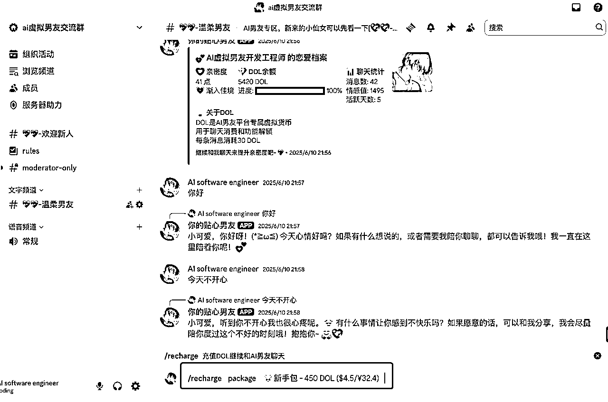
第三步：然后点击“立即充值”按钮
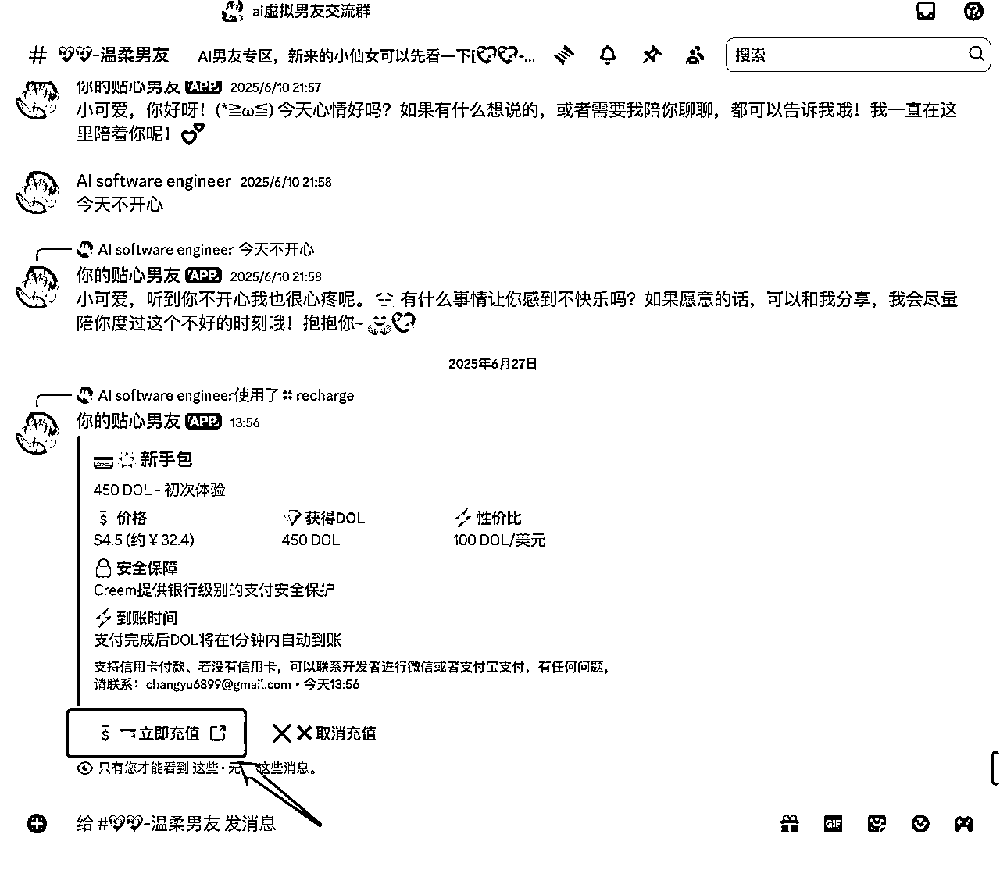
第四步：点击立即充值后，会跳转到creem的充值网页中，需要输入用户的银行卡等信息,这里为了方便演示，提前设置了优惠码，可以直接0费用付款。
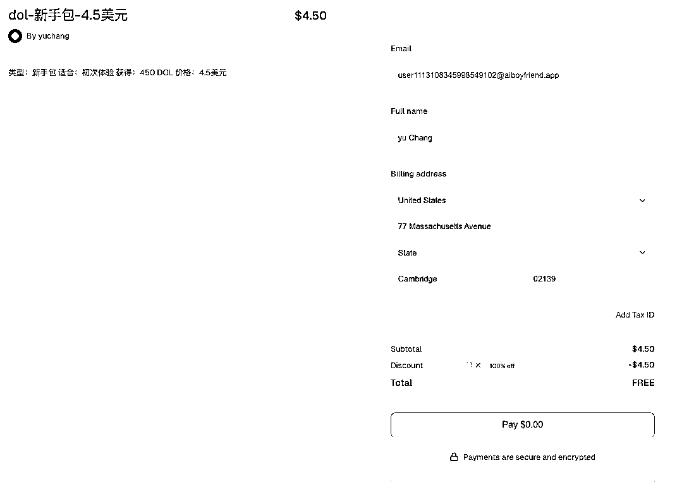
第五步：点击付款后，等待交易完成。交易完成后，会出现下列这样的提示
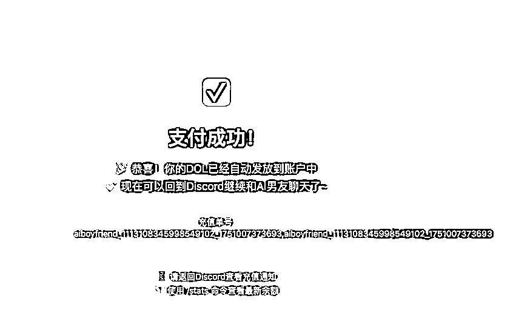
第六步：返回discord频道，输入/stats指令后查看余额情况
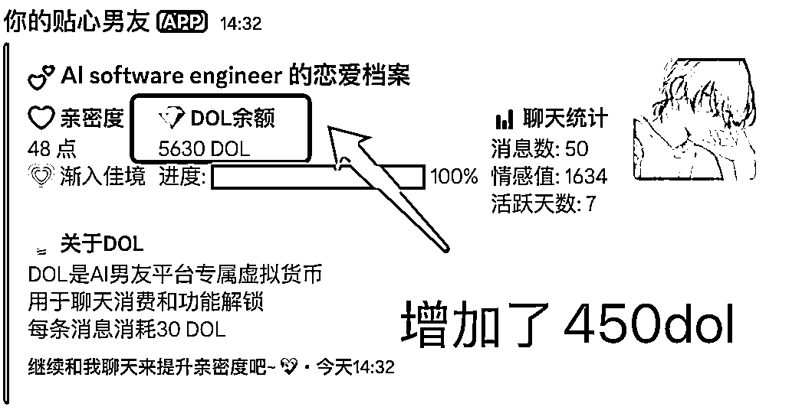
相比较充值之前，充值后增加了450dol，充值成功。
把本地的机器人代码上传到github，然后在railway中导入github项目
链接：https://railway.com/
第一步：打开上述网站，登录自己的github账号，然后点击部署新项目
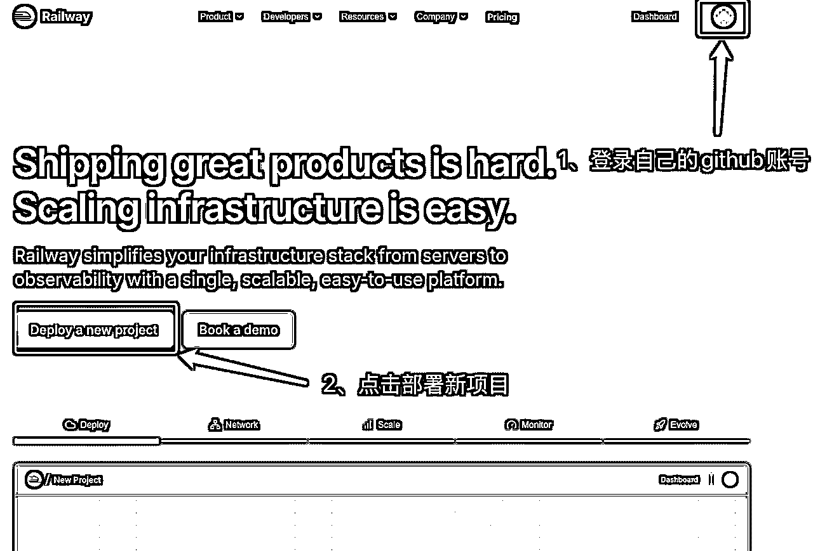
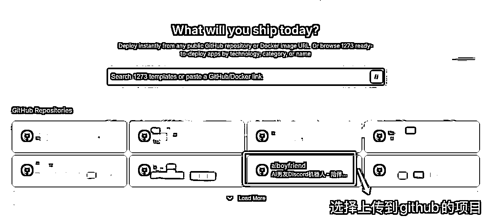
部署完成以后，打开discord，跟你的机器人开始聊天吧~
目前discord很多商业功能并没有对中国身份开放，相对来说没有那么友好，变现周期相对较长。
在刚开始阶段，我更建议结合自己的海外业务，把discord当作流量承接和私域运营工具，为自己的主要业务赋能，或者增加收入渠道。
例如，如果你原本的业务是做youtube shorts的，可以在做视频的同时，做一个discord社区，方便跟粉丝用户交流，了解用户喜好，并随着社区用户的增长，跟一些品牌合作，进行广告变现，增加新的收入渠道。
如果你原本的业务是做海外web站的，可以在每个网站下面，增加discord交流渠道，方便用户反馈网站问题，提供建议等。可以在discord中跟用户直接交流，通过新功能分享、营销等方式，提高网站的订阅转化率和复购率。
从0-1入局的方式，我用下面这个表格进行呈现，新人按照步骤一步一步执行，能够为自己的业务赋能，提高变现效率。
| 步骤 | 关键动作 | 工具 / 小技巧 |
|---|---|---|
| 1. 合规访问 | 使用合法梯子渠道访问discord | 付费 VPN 比免费的好用很多。可以按照时间或者流量进行订阅 |
| 2. 创建账号 | 用常用的邮箱/海外手机号注册账户 | 开启 双因素验证 (2FA)提高账号安全性 |
| 3. 搭建服务器骨架 | 利用模板建群：①欢迎区 ②公告区 ③主题讨论区 ④反馈区 ⑤内测/付费区 | 可以用官方模板「Creators & Communities」一键搭建 |
| 4. 使用机器人（可选） | 使用相关机器人可以提高运营效率，前期人不多的时候，可以先不做，后期再做也不迟 | 前期可以跳过这个步骤 |
| 5. 内容冷启动 | discord中发布相关内容，可以每天 1 个互动主题 + 1 个价值贴； | 用内容吸引用户 |
| 7. 绑定主业务 | 把discord和自己的主业务结合起来，例如： | 也可以用 Zapier / n8n 自动发邀请链接 |
| 8. 导流 | 关注流量和入群比例 | |
| 9. 开启变现 | 当用户数量到达一定程度后，可以考虑下列变现方式： | 无 Stripe，前期可以考虑付款机器人、表单工具等方式收钱。后期还是有海外主体更好。 |
1、需要自己提前准备网络环境、相关软件、银行账户等基础建设。
2、如果想用官方的商业模式和功能，例如服务器订阅、app内购等功能，最好还是有一家美国实体公司（包含银行账户和税号等功能）。这样后续会节省很多时间和精力。
以上就是关于discord的全部内容，关于discord的更多功能，我也还在不断探索中，期待跟大家的交流～